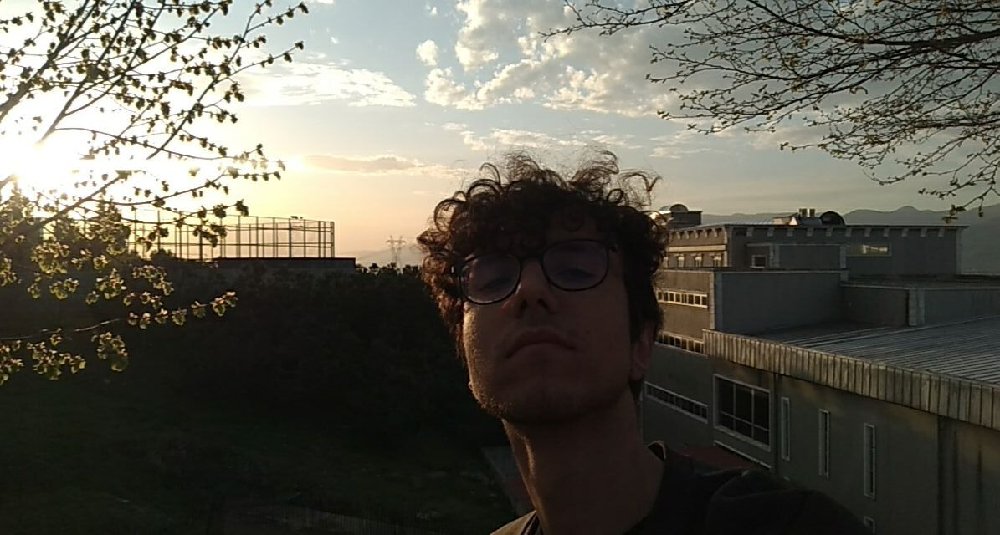
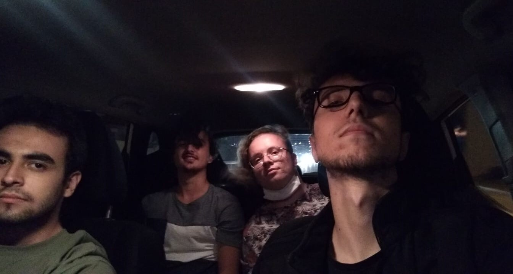
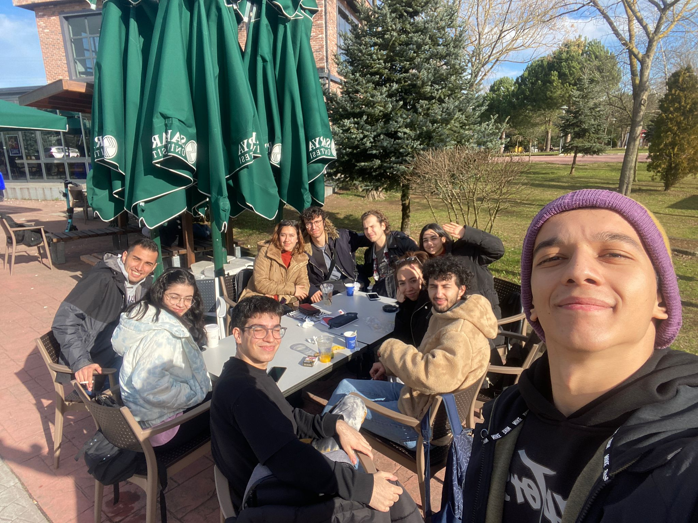

Merhaba ben Metehan. 2002 yılında Muş'da doğdum. 2002 ile 2003 yılları arası babamın mesleğinden (polis) dolayı Şırnak'ta büyüdüm. 2003 Yılında ise babamın tayini Yalovaya çıktı ve 2009 Yılına kadar Yalova'da yaşadım. 1 ve 2. Sınıfımı Yalova'da "Öğretmen Yusuf Ziya İlkokulunda" okudum (İlkokulum) 2009-2013 Yılları arasında İstanbul Başakşehirde yaşadım. 3 4 ve 5. sınıfı İstanbul'da "Ahmet Kabaklı İlkokulunda" okudum (2.İlkokulum). 6. Sınıfı ise İstanbul Büyükşehir Belediyesi "Akşemsettin Ortaokulunda" okudum (Ortaokulum). 2013 yılının Sonunda Bursa Karacabeye taşındık. 7 ve 8.sınıfı Bursa Karacabeyde "Karacabey Ortaokulunda" okudum (2.Ortaokulum). Liseyi Bursa Nilüfer'de Barış Anadolu Lisesinde okudum ve 2020 senesinde mezun oldum (Lisem). 1 sene mezuna kaldıktan sonra 2021 yılında Sakarya Üniversitesi Bilgisayar Mühendisliğini kazandım.

Hobilerimin arasında bilgisayar oyunları çok büyük bir yer kaplıyor.
Arkadaşlarım
ile güzel vakit geçirmek sinir stres atmak ve eğlenmek için bilgisayar oyunu oynarım.
Aynı
zamanda
oynadığım oyundan aldığım kısa kliplerimi de Youtube'a atarım. Bu yüzden kendi çapımda
bir
youtube kanalım
var. Eski zamanlarda Counter-Strike Global Offensive ve Zula gibi bir çok oyunda
profesyonel
oynadım.
Şuan ise Valorant Oyununda arkadaşlarımla kurduğumuz Akatsuki takımında oynamaya devam
ediyorum.
Youtube Kanal Linkim:
Youtube Kanalım
Hobilerimin arasında Şarkı ve müzik dinlemek çok büyük bir yer kaplıyor. Yaşamımızın her alanında müzik vardır; eğlenmek, rahatlamak ya da bize çağrıştırdığı anıları hatırlamak istediğimizde vs. duygularımızı ifade eden en güzel araçlardan biridir. Özellikle Türkçe rock ve slow kategorisinde şarkıları dinlemeyi çok severim (Playlist). Yada rahatlamak ve dinlenmek için sözsüz müzik aletleriyle oluşturulmuş dinlendirici müzikleri dinlemeyi çok severim genelde bunlar yabancı müzikler oluyor. (Playlist). Bu da benim Spotify profilim: Spotify

Bilgisayar Mühendisliğini istememin en büyük sebeplerinden biri de Yazılıma olan merağımdı. Yazılım dünyası kocaman bir dünya, günümüzdeki her şey teknolojinin eseri insan meraklanmadan duramıyor. Bilgisayarla hep iç içe büyüdüm. Belli bir zamandan sonra oyunları değilde oyunların nasıl yapıldığını merak etmeye başlamıştım ve bu yüzden Bilgisayar Mühendisliği okumaya karar verdim. Şu anda da bölümümden çok memnunum. Yeni bir yazılım dili öğrenmek ne kadar zor olsada bence çok eğlenceli. :)